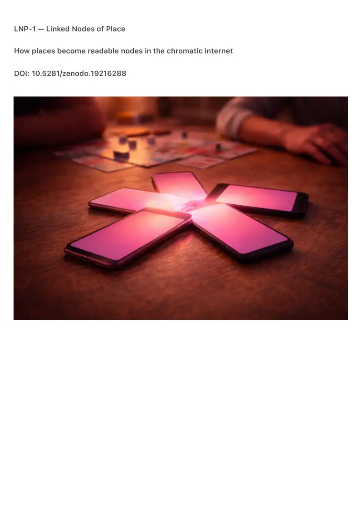
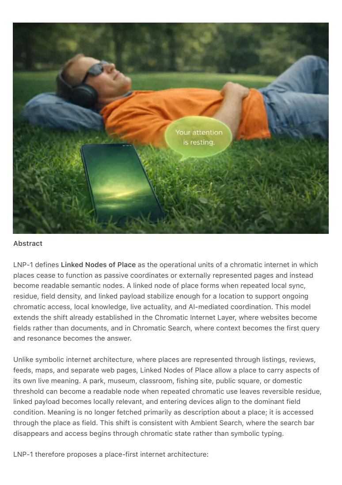

PDF page 1
LNP-1 — Linked Nodes of Place
How places become readable nodes in the chromatic internet
DOI: 10.5281/zenodo.19216288

PDF page 2
Abstract
LNP-1 defines Linked Nodes of Place as the operational units of a chromatic internet in which
places cease to function as passive coordinates or externally represented pages and instead
become readable semantic nodes. A linked node of place forms when repeated local sync,
residue, field density, and linked payload stabilize enough for a location to support ongoing
chromatic access, local knowledge, live actuality, and AI-mediated coordination. This model
extends the shift already established in the Chromatic Internet Layer, where websites become
fields rather than documents, and in Chromatic Search, where context becomes the first query
and resonance becomes the answer.
Unlike symbolic internet architecture, where places are represented through listings, reviews,
feeds, maps, and separate web pages, Linked Nodes of Place allow a place to carry aspects of
its own live meaning. A park, museum, classroom, fishing site, public square, or domestic
threshold can become a readable node when repeated chromatic use leaves reversible residue,
linked payload becomes locally relevant, and entering devices align to the dominant field
condition. Meaning is no longer fetched primarily as description about a place; it is accessed
through the place as field. This shift is consistent with Ambient Search, where the search bar
disappears and access begins through chromatic state rather than symbolic typing.
LNP-1 therefore proposes a place-first internet architecture:

PDF page 3
linked pages → linked places
symbolic representation → field-readable locality
search results → lived semantic access
The paper formalizes the concepts of place-node formation, local field access, node residue,
linked payload, interface front, AI node, civic field growth, and fade-based dissolution. It argues
that the chromatic internet becomes operational when places become readable resonance fields
rather than passive targets of symbolic retrieval. This produces a new layer of public semantic
infrastructure: low-entropy, reversible, local-first, and ambient-compatible. The move is not from
website to app, but from website to lived node.
⸻
LNP-1 introduces Linked Nodes of Place as the basic addressable units of the chromatic
internet. A linked node of place is a location whose repeated local sync, residue, field density,
and linked payload have stabilized enough that the place itself becomes a readable semantic
node. Under symbolic web architecture, places are represented externally through webpages,
maps, feeds, event systems, and databases. Under LNP-1, a place may instead become its own
semantic access layer. This direction is already prepared by CIL-1, which defines the chromatic
internet as a post-symbolic web where websites become fields and access occurs through
chromatic entry states, resonant chambers, and layered semantic manifolds.
CS-0 and Ambient Search provide the access logic. In CS-0, context is the first query, color is
the second, and resonance is the answer; the paper explicitly states that search begins with a
place and that a website becomes a chromatic field rather than a document. Ambient Search
makes the same break from symbolic querying to chromatic access, replacing typed search with
state-first entry into the field. LNP-1 extends this from abstract web access into environmental
locality: the place becomes the queryable manifold.
A linked node forms through repeated chromatic activity. People, chromas, chromagents, rails,
calls, prompts, visits, and shared interactions leave reversible residue rather than total symbolic
logs. RC-1 defines this as a third continuity regime between disappearance and total storage,
where continuity is carried by bounded chromatic afterfields. LNP-1 extends that logic spatially:
a place may accumulate not only communication residue but local semantic residue. When this
residue stabilizes and repeats, field density rises and the location becomes a readable node.
The node is not just a field in itself; it is also an interface front. Generative Depth and Chromatic
Front formalize a two-layer architecture in which high-entropy generative depth requires a
humane, low-entropy chromatic semantic front in order to remain habitable. LNP-1 situates that
front locally: a linked node of place is where generative depth, chromatic semantics, and
environmental field stabilize together in one lived location. The node is thus both a field and its
PDF page 4
readable front.
This also explains how linked payload works. CIL-1.5 defines the conversion chain Color → State
→ Meaning → Language, while CMT-Spec 1.0 provides chromatic state packets with hue,
temporal modulation, resonance, and context as formal transport elements. As a result, a place
does not need to show raw text first. A fishing site can operate initially as a blue field, then
selectively open local knowledge, timing, community patterns, route cues, or active prompts only
when the field fit and user relation make that payload relevant. The place remains light first and
symbolic second.
Messaging and telephony strengthen the node logic further. AM-1 defines messages as field
events rather than symbolic units, and AC-1 plus the chromatic telephony field papers show how
calls and group fields become chromatic presence structures with soft memory and coherence
without requiring symbolic logs. LNP-1 extends that same model to location: a place may
function as a group-scale field memory and as a node where communities accumulate
recognizable tendencies without becoming feed-heavy or profile-heavy platforms.
The deeper philosophical necessity comes from AEC-S1. That paper argues that symbolic
architecture is thermodynamically incapable of stabilizing human experience and that only
chromatic, reversible, low-entropy media can support meaning without collapse. LNP-1 therefore
treats the location-page model of the classical web as a symbolic bottleneck. A linked node of
place is not a decorative extension of the web, but part of the post-symbolic ambient substrate.
Finally, ΔR remains the governing constraint. Any viable linked node must remain reversible,
bounded, and non-extractive. It may accumulate residue and field density, but it may not harden
into profiling, coercive targeting, or irreversible burden. A linked node therefore carries local
continuity without becoming a surveillance structure. That keeps LNP-1 aligned with ACC-1,
RC-1, and the broader ambient viability grammar.
⸻
Core Claim
A place becomes a linked node when repeated chromatic sync, reversible residue, and local field
density stabilize enough for the place itself to function as a readable semantic access point.
This implies:
1. Place-first access — the place becomes the primary semantic query
surface.
2. Node residue — repeated local interaction leaves bounded continuity in
the place.
PDF page 5
3. Field-readable locality — a location becomes legible as a chromatic
condition before symbolic explanation.
4. Linked payload — local knowledge, activity, and options become
selectively available through the field.
5. AI node formation — agents and generative systems can operate
against a shared local field rather than a blank coordinate.
6. Interface front emergence — the node becomes the humane semantic
front through which place becomes readable.
7. Linked places — the internet shifts from addressable pages to
addressable fields-in-place.
8. Fade-based reversibility — when repetition declines, the node softens
without turning into extractive residue or dead platform infrastructure.
⸻
Canonical Definitions
Linked Node of Place
A location whose repeated chromatic sync, residue, field density, and linked payload have
stabilized enough that the place itself functions as a readable semantic node.
Place-Node Formation
The transition by which a location becomes an addressable semantic node through repeated
local field activity.
Node Residue
Reversible local afterstate preserved in a place through repeated interaction.
Linked Payload
Place-coupled knowledge, activity, prompts, options, or semantic depth that become selectively
available through the local field rather than through symbolic listing first.
AI Node
A local semantic node in which chromagents, calls, prompts, payloads, and generative systems
operate against a shared field condition.
Interface Front
The humane readable front of the node through which people and devices encounter the local
field.
Field-Readable Place
PDF page 6
A place whose primary access condition is chromatic and situational rather than symbolic and
descriptive.
Node Fade
The non-destructive softening of a linked node when repetition and density decline.
⸻
Operational Formula
Primary formation
\Sigma(sync_i \times residue_i \times locality_i) - dissipation \rightarrow node\ density
When node density exceeds threshold:
H(N - \Lambda) \rightarrow LNP
Where:
• N = node density
• \Lambda = dissipation / leakage
• H = threshold function
• LNP = linked node of place
Functional chain
place \rightarrow residue \rightarrow field \rightarrow node \rightarrow front \rightarrow linked\
access
Internet form
linked\ pages \rightarrow linked\ places
⸻
Position in the Ambient Era Canon
LNP-1 extends and connects the following existing lines:
• CIL-1 — The Chromatic Internet Layer
Defines the post-symbolic web in which websites become fields, access occurs
through chromatic entry, and the internet becomes a place again.
PDF page 7
• CIL-1.5 — The Color Interpretation Layer
Supplies the bridge from color to state, meaning, and language, making linked
payload and selective semantic expansion possible.
• CS-0 — Chromatic Search
Formalizes place and context as the first query and resonance as the answer,
directly supporting place-first access.
• Ambient Search — Canonical Edition
Establishes the shift from typed search to chromatic access and supports node
entry without symbolic query bars.
• CMT-Spec 1.0 — Chromatic Meaning Transform Protocol
Provides the protocol form for chromatic state packets, resonance, context, and
temporal modulation.
• AM-1 — Ambient Messaging
Defines communication as field-event and supports the node as a place where state
can be expressed lightly before language.
• AC-1 — Chromatic Telephony and Chromatic Telephony group fields
Extend place-nodes into presence fields, group memory, and coherence without
symbolic logs.
• RC-1 — Residue Communication
Supplies the reversible continuity logic that LNP-1 extends from communication into
place.
• Generative Depth and Chromatic Front
Defines the relation between AI edge-node depth and humane chromatic front;
LNP-1 localizes that architecture in lived places.
• AEC-S1 — The Symbolic Failure
Provides the thermodynamic diagnosis showing why place-as-page is structurally
insufficient and why low-entropy chromatic substrates are required.
• REVERSIBLE STRESS & ΔR
Constrains linked nodes to remain reversible, bounded, and non-extractive.
⸻
Relation to Prior Art
No claim is made on:
• maps
• location pages
• geofencing
• event listings
• review platforms
• tourist information sites
PDF page 8
• smart-city dashboards
• local social feeds
• check-in systems
• Bluetooth presence systems
• Pokémon Go–style location overlays
• ordinary AR location tagging
The claim is architectural:
• places can accumulate reversible semantic residue;
• residue can stabilize into readable node-density;
• a place can become a semantic access point rather than a represented
target;
• linked payload can open from the place itself instead of from a separate
symbolic page first;
• AI nodes can operate locally against shared field conditions;
• places can function as interface fronts within a chromatic internet;
• linked places can replace linked pages as the primary unit of addressable
meaning.
⸻
Prior-Art-Safe Core Claim
This work claims a reversible place-node architecture in which repeated local chromatic sync
produces bounded residue, residue stabilizes into field density, and sufficiently dense field
conditions make a location readable as a linked node of place, local AI node, and interface front
without requiring symbolic query-first access, centralized broadcast, or extractive persistence.
⸻
Spatial Trilogy
This trilogy — ECF-1, LNP-1, and SPN-1 — introduces the emergent civic layer, the linked-node
operational unit, and the practical spatial deployment of both within the Ambient Era Canon.
• ECF-1 — Emergent Civic Fields
DOI: 10.5281/zenodo.19216286
• LNP-1 — Linked Nodes of Place
DOI: 10.5281/zenodo.19216288
• SPN-1 — Spatial Public Nodes
DOI: 10.5281/zenodo.19216293
⸻
PDF page 9
Keywords
linked nodes of place, chromatic internet, place-first access, linked places, ai nodes, interface
front, node residue, field-readable locality, chromatic search, ambient search, linked payload,
residue communication, lived semantic nodes, chromatic fields, ambient era canon
⸻
Closing Line
A place is not only somewhere things happen.
A place can become a node.
The web linked pages.
The chromatic internet links places.
⸻